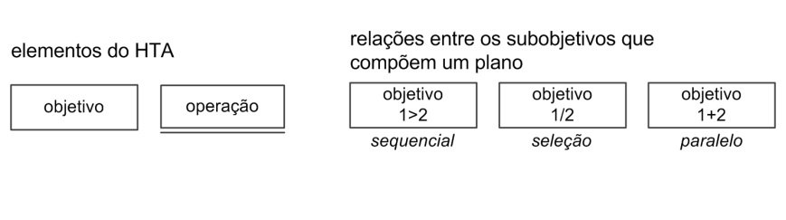

Análise de tarefas
Introdução
A análise de tarefas é um método essencial para compreender o trabalho dos usuários, como eles realizam suas ações e os motivos por trás delas. Nesse contexto, o trabalho é definido em termos dos objetivos que os usuários desejam ou precisam alcançar.
Esse tipo de análise pode ser usado para avaliar a situação atual, para o redesenho ou para a avaliação de intervenções, como a introdução de um novo sistema. Uma das etapas fundamentais nessa análise é coletar e identificar os objetivos que os usuários pretendem atingir com o sistema em questão.
No caso do Cinemark, o site possue como foco central a experiência do cliente em relação à compra de ingressos e ao acesso à programação dos cinemas. Outras funcionalidades incluem a compra de alimentos, consulta ao histórico de compras, gerenciamento de reservas, informações sobre promoções e fidelidade.
As tarefas principais selecionadas para análise foram:
- Comprar ingressos para filmes em cartaz e alimentos
- Realizar reserva de salas
- Consultar os benefícios do CinemarkClub
- Vouchers Corporativos
Essas tarefas foram definidas seguindo os dados do perfil dos usuários, que apontam maior uso dessas funções no site e aplicativo do Cinemark.
Metodologia
Para analisar as tarefas realizadas pelos usuários do Cinemark, utilizamos duas técnicas, a Análise Hierárquica de Tarefas (HTA), que foi aplicada para tarefas complexas e sequenciais, e Árvore de Tarefas Concorrentes (CTT), utilizada em tarefas com escolhas ou interações simultâneas. Cada uma foi selecionada com base nas características das tarefas e no nível de interação necessário.

Fonte: Página 164-167. Capítulo 8 - Análise de Tarefas. BARBOSA, S. D. J.; SILVA, B. S. Interação Humano-Computador. Rio de Janeiro: Elsevier, 2011.
Resumo das Relações
- Sequencial (>): Tarefa depende da anterior para ser executada.
- Paralelo (+): Tarefas podem ser feitas ao mesmo tempo.
- Seleção (/): O usuário escolhe entre uma opção ou outra.
Análise Hierárquica de Tarefas
Análise HTA 1: Comprar ingressos
A compra de ingressos é uma das principais tarefas realizadas pelos usuários do Cinemark. Esta tarefa envolve múltiplas etapas, como seleção do filme, escolha da sessão, dos assentos e finalização do pagamento. Análise detalhada:
| Objetivos/Operações | Relações | Plano | Problemas e Recomendações |
|---|---|---|---|
| 0. Comprar ingressos | 0 > 1 > 2 > 3 > 4 > 5 | Seguir a sequência de passos: acessar site/app > selecionar filme e sessão > escolher assentos > adicionar serviços extras > finalizar pagamento > receber confirmação | - |
| 1. Selecionar filme e sessão | 1.1 > 1.2 > 1.3 | Seguir a sequência: escolher filme > selecionar data > selecionar horário da sessão | Menu de filmes ou horários pode estar mal organizado ou conter excesso de informações. Utilizar filtros intuitivos (gênero, horário e disponibilidade). |
| 2. Escolher assentos | 2.1 > 2.2 > 2.3 | Plano: clicar no mapa interativo e selecionar os assentos disponíveis | Usuários podem ter dificuldades em usar o mapa se a interface for complexa ou pouco responsiva. Fornecer legendas claras (assentos disponíveis, ocupados, acessíveis). |
| 3. Adicionar serviços extras | 3.1 + 3.2 | Escolher alimentos ou selecionar upgrade para sala premium | Usuários podem não perceber a opção de serviços extras se não estiverem bem visíveis. Apresentar sugestões personalizadas durante o processo. |
| 4. Finalizar pagamento | 4.1 > 4.2 > 4.3 | Escolher método de pagamento, inserir dados de pagamento e confirmar compra | Falha no processamento ou tempo de resposta lento pode causar desistência da compra. Oferecer opções de pagamento rápido e garantir segurança na interface. |
| 5. Receber confirmação de compra | - | Exibir mensagem ou e-mail de confirmação. | - |
Autor: Anne de Capdeville e José Felipe.
Segue o Diagrama HTA:

Autor: Anne de Capdeville.
Análise de Tarefas HTA 2: Reserva de Salas
O Cinemark disponibiliza a funcionalidade de reserva de salas para eventos particulares, como reuniões corporativas, festas de aniversário ou exibições exclusivas de filmes. O processo é realizado de forma online por meio do site ou aplicativo.
| Objetivos/Operações | Relações | Plano | Problemas e Recomendações |
|---|---|---|---|
| 0. Reservar uma sala de cinema | 0 > 1 > 2 > 3 > 4 > 5 | Acessar site > selecionar local > selecionar data > selecionar tipo de evento > preencher dados > efetuar reserva | - |
| 1. Selecionar local | 1.1 > 1.2 | Seguir a sequência: escolher cidade > selecionar unidade | Usuários podem não encontrar rapidamente o local desejado. Incluir filtros por região e lista de unidades próximas. |
| 2. Escolher data e horário | 2.1 > 2.2 | Seguir a sequência: informar data > selecionar horário disponível | Horários indisponíveis podem causar frustração ao usuário. Apresentar apenas os horários livres e permitir consulta rápida das opções. |
| 3. Selecionar tipo de evento | 3.1 | Escolher tipo de evento(corporativo, exibição privada) e personalização | - |
| 4. Preencher dados pessoais | 4.1 > 4.2 > 4.3 + 4.4 | Seguir a sequência: Inserir nome completo > inserir e-mail > inserir telefone > inserir informações adicionais(opcional) | - |
| 5. Efetuar reserva | 5.1 / 5.2 > 5.3 | Seguir a sequência: escolher forma de pagamento(pagamento ou orçamento) > inserir dados do pagamento(se aplicável) > confirmar reserva | Usuários podem não se sentir seguros ao inserir dados financeiros. Garantir que a interface transmita segurança, incluindo selos de proteção de dados e criptografia. |
Autor: Anne de Capdeville.
Segue o Diagrama HTA:

Autor: Anne de Capdeville.
Análise de Tarefas HTA 3: Cinemark Club
O Cinemark Club é o programa de assinatura que oferece descontos em ingressos e outros benefícios exclusivos para os membros. A tarefa analisada aborda o processo de adesão ao clube.
| Objetivos/Operações | Relações | Problemas e Recomendações |
|---|---|---|
| 0. Inscrever-se no Cinemark Club | 1 > 2 > 3 > 4 | Problema: Informações pouco claras sobre os benefícios |
| 1. Acessar página de inscrição | Plano: Entrar no site/app e navegar até a página do Cinemark Club | |
| 2. Selecionar plano | Plano: Escolher entre os planos disponíveis (mensal ou anual) | |
| 3. Preencher dados pessoais | Plano: Informar nome, CPF, e-mail e dados de pagamento | |
| 4. Confirmar adesão | Plano: Aceitar os termos e confirmar o pagamento |
Autor: Anne de Capdeville.
Análise de Tarefas HTA 4: Voucher Corporativo
O Voucher Corporativo é uma funcionalidade voltada para empresas que desejam adquirir ingressos em grande quantidade para colaboradores ou parceiros.
| Objetivos/Operações | Relações | Plano | Problemas e Recomendações |
|---|---|---|---|
| 0. Adquirir Vouchers Corporativos | 0 > 1 > 2 > 3 | Seguir a sequência: selecionar quantidade e tipo de voucher > preencher informações essenciais > escolher forma de pagamento e concluir transação | - |
| 1. Selecionar quantidade e tipo de voucher | 1.1 > 1.2 | Seguir a sequência: escolher quantidade de vouchers > selecionar tipo de voucher | Falta de informações claras sobre as diferenças entre os tipos de voucher. Apresentar descrições e comparações dos tipos de vouchers. |
| 2. Informar dados da empresa | 2.1 > 2.2 > 2.3 | Seguir a sequência: inserir CNPJ > Inserir nome da empresa > Inserir endereço de faturamento | Usuários podem não entender quais informações são obrigatórias. Implementar validação e mensagens de orientação para os campos. |
| 3. Confirmar pagamento | 3.1 > 3.2 > 3.3 | Seguir a sequência: escolher forma de pagamento > inserir dados de pagamento > confirmar transação | Falta de transparência sobre o prazo de entrega dos vouchers. Exibir informações claras sobre a entrega antes da confirmação final. |
Autor: Anne de Capdeville.
Segue o Diagrama HTA:
Autor: Anne de Capdeville.
Árvore de Tarefas Concorrentes (CTT) - Cinemark
Motivo da Escolha
A Árvore de Tarefas Concorrentes (CTT) foi escolhida para analisar as interações de usuários no sistema Cinemark, pois ela permite representar de forma clara as tarefas concorrentes e sequenciais que ocorrem durante o processo de compra de ingressos, reserva de salas e gestão de benefícios como o Cinemark Club e o voucher corporativo. Esta técnica ajuda a identificar tarefas que podem ser realizadas ao mesmo tempo e a entender as dependências entre elas.

Autor: Anne de Capdeville.
Fonte: Página 173-175. Capítulo 8 - Análise de Tarefas. BARBOSA, S. D. J.; SILVA, B. S. Interação Humano-Computador. Rio de Janeiro: Elsevier, 2011.
Análise da Tarefa CTT 1: Compra de ingressos e alimentos
A tarefa "Compra de ingressos e alimentos" envolve várias interações do usuário com o sistema, onde o usuário escolhe o filme, sessão, o horário, assentos e serviços extras(compra de alimentos). Além disso, pode incluir uma etapa de pagamento.
| Objetivos/Operações | Relações | Plano | Problemas e Recomendações |
|---|---|---|---|
| 1. Selecionar filme e sessão | >> | Seguir a sequência: escolher filme >> selecionar data >> selecionar horário da sessão | Menu de filmes ou horários pode estar mal organizado ou conter excesso de informações. Utilizar filtros intuitivos (gênero, horário e disponibilidade). |
| 2. Escolher assentos | >> | Plano: clicar no mapa interativo >> selecionar os assentos disponíveis | Usuários podem ter dificuldades em usar o mapa se a interface for complexa ou pouco responsiva. Fornecer legendas claras (assentos disponíveis, ocupados, acessíveis). |
| 3. Adicionar serviços extras | Paralelismo Opcional | Escolher alimentos ou selecionar upgrade para sala premium | Usuários podem não perceber a opção de serviços extras se não estiverem bem visíveis. Apresentar sugestões personalizadas durante o processo. |
| 4. Finalizar pagamento | >> | Escolher método de pagamento >> inserir dados de pagamento >> confirmar compra | Falha no processamento ou tempo de resposta lento pode causar desistência da compra. Oferecer opções de pagamento rápido e garantir segurança na interface. |
| 5. Receber confirmação de compra | >> | Exibir mensagem ou e-mail de confirmação. | - |
Autor: Anne de Capdeville e José Felipe.
Segue o Diagrama CTT:

Autor: Anne de Capdeville.
Análise da Tarefa CTT 2: Reserva de Salas
A tarefa "Reserva de Salas" envolve várias interações do usuário com o sistema, onde o usuário escolhe o filme, o horário, a sala, o tipo de evento e a quantidade de ingressos. Além disso, pode incluir uma etapa de pagamento.
| Objetivos/Operações | Operador | Plano | Problemas e Recomendações |
|---|---|---|---|
| 1. Selecionar local | >> | Seguir a sequência: escolher cidade >> selecionar unidade | Dificuldade em localizar a unidade desejada. Apresentar filtros de busca por região. |
| 2. Escolher data e horário | >> | Seguir a sequência: informar data >> selecionar horário disponível | Horários indisponíveis podem causar frustração ao usuário. Apresentar apenas os horários livres e permitir consulta rápida das opções. |
| 3. Selecionar tipo de evento | [] | Escolher tipo de evento | Permitir personalizações dependendo do evento escolhido. |
| 4. Preencher dados pessoais | >> | Seguir a sequência: Inserir nome completo >> inserir e-mail >> inserir telefone >> inserir informações adicionais(opcional) | Falta de preenchimento correto dos campos. Implementar validação de campos e mensagens de erro claras. |
| 5. Confirmar e efetuar reserva | Paralelismo opcional | Seguir a sequência: escolher forma de pagamento(pagamento ou orçamento), inserir dados do pagamento(se aplicável), confirmar reserva | Falta de confiança ao inserir informações financeiras. Garantir segurança por meio de selos de proteção de dados e criptografia. |
Autor: Anne de Capdeville.
Segue o Diagrama CTT:

Autor: Anne de Capdeville.
Análise da Tarefa CTT 3: Cinemark Club
O Cinemark Club permite que os usuários acumulem pontos para trocar por ingressos ou benefícios exclusivos. O processo para gerenciar o Cinemark Club inclui fazer login, verificar os pontos acumulados, resgatar prêmios, e eventualmente, renovar a associação.
Fluxo da Tarefa:
- O usuário acessa sua conta no Cinemark Club.
- O usuário consulta a quantidade de pontos acumulados.
- O usuário escolhe um prêmio ou benefício para resgatar.
- O usuário aplica o resgate de pontos na compra de ingressos ou produtos.
- O sistema atualiza os pontos após o resgate.
- O usuário recebe um comprovante de resgate.
Análise da Tarefa CTT 4: Voucher Corporativo
Os vouchers corporativos oferecem aos funcionários benefícios como ingressos ou descontos para sessões de cinema. O processo de resgatar um voucher corporativo pode ser feito através do site, sendo necessário um código de acesso fornecido pela empresa.
| Objetivos/Operações | Relações | Plano | Problemas e Recomendações |
|---|---|---|---|
| 0. Adquirir Vouchers Corporativos | >> | Seguir a sequência: selecionar quantidade e tipo de voucher > preencher informações essenciais > escolher forma de pagamento e concluir transação | - |
| 1. Selecionar quantidade e tipo de voucher | >> | Seguir a sequência: escolher quantidade de vouchers > selecionar tipo de voucher | Falta de informações claras sobre as diferenças entre os tipos de voucher. Apresentar descrições e comparações dos tipos de vouchers. |
| 2. Informar dados da empresa | >> | Seguir a sequência: inserir CNPJ > Inserir nome da empresa > Inserir endereço de faturamento | Usuários podem não entender quais informações são obrigatórias. Implementar validação e mensagens de orientação para os campos. |
| 3. Confirmar pagamento | >> | Seguir a sequência: escolher forma de pagamento > inserir dados de pagamento > confirmar transação | Falta de transparência sobre o prazo de entrega dos vouchers. Exibir informações claras sobre a entrega antes da confirmação final. |
Autor: Anne de Capdeville.
Segue o Diagrama CTT:
Autor: Anne de Capdeville.
Bibliografia
Barbosa S. D. J., Silva B. S. da. Interação Humano-Computador. Elsevier, 2010.
Histórico de versões
| Versão | Descrição | Autor(es) | Data | Revisor(es) | Data de revisão |
|---|---|---|---|---|---|
| 1.0 | Criação da página | Ana Joyce | 01/12/2024 | Anne de Capdeville | 01/12/2024 |
| 2.0 | Conteúdo da página | Anne de Capdeville | 02/12/2024 | Ana Joyce | 03/12/2024 |
| 3.0 | Correção finais | Anne de Capdeville | 04/02/2025 | Ana Joyce | 05/02/2025 |